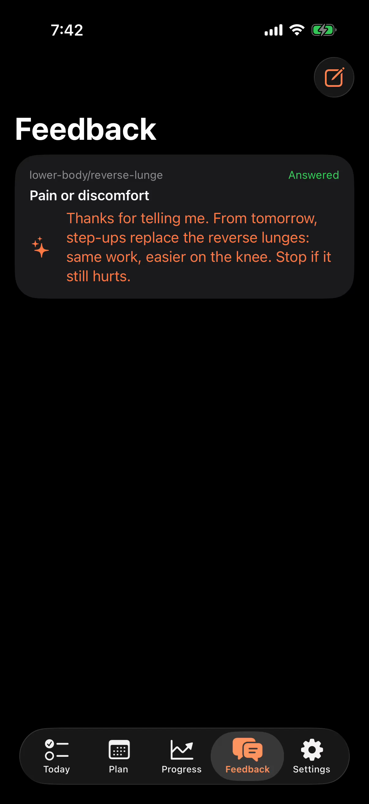
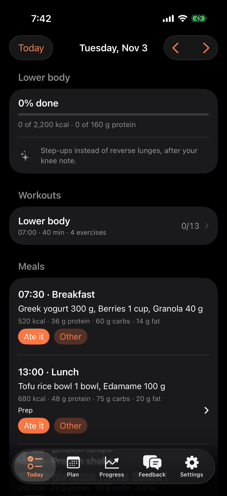

Everyone at the gym is guessing. Her agent wrote her plan.
The plan for FitLoop's promo: a 30-second comedy plus 15-second cuts in 16:9 and 9:16, set in a modern gym at dawn. Everyone around Maya is guessing: scrolling workout videos, sitting backwards on machines. Maya isn't. Her own AI agent wrote her workouts and meals; FitLoop puts them in her glasses mid-set, a tap on her ring starts the rest timer, and when a lunge hurts she tells her agent right there. That evening the agent's reply is in her phone and tomorrow's plan is adjusted. Her running gag is Theo, a gym newcomer who copies everything she does, one beat late, until he gives up: "Okay. I'm getting an agent." You make the characters, the shots and the music in Google Flow from the prompts below; I make the screen recordings of the glasses and iPhone apps, the voiceover and the edit.
Story + scriptsUsed in the edit
CharactersMaya and Theo made in Flow
Flow shotsAll 7 in, all used
Recordings3 glasses, 2 iPhone screens
Voiceoveraf_sarah + the characters' own Flow lines
Music30 s take 2, 15 s take 1, picked by measurement
Every claim comes from projects/fitloop: the user's own agent writes the plan over MCP; FitLoop shows it on iPhone, Watch, the web and Even G2 glasses; a tap marks a set done and starts the rest timer; the ring's hold menu sends "Too hard", "It hurts" and more to the agent; the agent replies in the app and publishes the next plan version.
FitLoop gives no advice of its own, so the video never says FitLoop coaches: the agent coaches, FitLoop keeps her on the plan (the site's own tagline).
Colours from the app icon: FitLoop orange and peach on deep indigo.
Built in from the last videos
Fast: a cut every 2–4 beats of the music, each Flow shot used for 1.5–3 s.
No green screens: the glasses' display can't be seen from outside, her phone faces away and her watch face is turned to the inside of her wrist. The product is shown in real recordings.
Short on-camera lines in the characters' own Flow voices, narration by Kokoro, word-by-word captions, loudness for social platforms.
Next for you: watch and listen to the three cuts in §1, and check my calls I couldn't make by ear (the music takes and the narration voice, both easy to swap). Write what to change in Your notes and click Copy summary, or tell me. When you like a cut, upload it with §9 and send me the 30 s link for FitLoop's home and docs pages.
The edit: three cuts to review
Built in Remotion (branding/promo-videos/src/fitloop-launch) from your seven Flow shots, the two music takes I measured as the best fit, five real recordings of the glasses and iPhone apps, and the af_sarah narration. The jokes are in the characters' own Flow voices; the narration says what FitLoop does.
Take 2 ("form-check"), 103 BPM. Its first 26 s follow the prompt (a quiet, hesitant intro, the groove arriving at ≈7 s, a one-bar drop at ≈24 s), then it jumps on the beat to the track's last 4.6 s for its clean hard stop on the end card. Take 1 has a sharper stop before its groove but fades out at the end instead of stopping. Both takes are ~60 s long, which is why the edit splices.
Say "take 1": I re-cut to its beats.
Music, 15 s
Take 1 ("gym-sting"): intro, the groove at 3 s, then spliced to its ending: a stop at 12 s and a final hit at 13 s under the end card. Take 2 ends by fading.
Same.
Narration voice
af_sarah, the Kokoro voice closest to Maya's Flow voice: median pitch 207 Hz vs her 197 Hz (af_heart and af_bella 212 Hz, af_nicole 157 Hz, bf_emma 186 Hz but British). Picked by measurement, not by ear. Takes for all five are in §7.
Say the voice's name.
On-camera lines
Flow said the written lines well, so the edit uses them: Theo's "Wait, how many sets is this?", Maya's "My agent wrote mine." and Theo's "Okay. I'm getting an agent." Flow's ad-libs are muted ("Let's increase the weight for this set." in shot 3, "I almost had it that time. Keep working on it." in shot 5). Shot 6's phone buzz is kept as a sound effect.
—
The 15 s script
Changed from the plan: it uses the shot 2 exchange instead of a narrated "My agent wrote my plan", then "FitLoop puts my plan in my glasses." Theo's last line didn't fit in 15 s next to the tagline.
—
The loop graphic
Dropped: the beat between the kitchen and the phone was too short for it, and the phone already shows the agent's reply and the change note.
Ask, and I add it.
Footage left out
Shot 3 after ≈2 s (Flow drew its own fake display next to her face); shot 7's first ≈3.5 s (a black film-frame border).
—
Pace
Cuts sit on the music's beats; Flow shots are on screen 1.1–3.1 s.
Transitions
Flow shot → its recording: a cross-zoom. Between story beats: a blurred slide. Into the end card: a dreamy zoom. Everything pushes in slowly.
Captions
Every spoken word, word by word, timed from a speech-recognition pass; the end card carries the tagline instead of a caption.
Sound
The music ducks under every line. Measured loudness after the two-pass normalisation: 30 s −14.5 LUFS (true peak −0.7 dBTP), 15 s cuts −14.5 LUFS (−1.4 dBTP); social platforms target about −14.
On screen
"Demo data" on every recording; on the end card: "Works with any MCP agent. Plans shown are demo data. Not medical advice. People and scenes are AI-generated."
9:16
Flow shots are cropped around the speaker (Theo for his question, Maya for her answer), the glasses display widens to the frame, the end card is laid out for the tall frame.
What I checked: a frame every second of each render; a speech-recognition read of the 30 s and 15 s renders (every line is there, in order, no ad-libs); lengths and loudness. What I couldn't: listen. Please watch with sound: the mix of Flow's voices, the narration and the music, and the splice in each music track, need your ears. Known nits: Theo looks different in shot 2 (no cap, longer hair) than in his other shots; Maya's watch face shows (dark) in shot 4.
The renders are reproducible (npx remotion render fitloop-launch-30 etc. in branding/promo-videos, then the loudness pass; see media.md) and make this report ≈45 MB, so media/edit/ stays out of git.
The story: the only person at the gym with a plan
A modern gym at dawn: indigo light in the windows, warm orange lamps inside. Everyone is guessing. Theo, new and very enthusiastic, sits backwards on a machine squinting at a workout video. Maya walks past him knowing exactly where she's going. When Theo asks her how many sets he should do, she answers mid-squat, to the camera: "My agent wrote mine." Her glasses show the exercise, the set and its target; a tap on her ring marks the set done and the rest timer starts itself. On a lunge her knee twinges; she holds the ring and tells her agent "It hurts", while Theo, copying her, topples onto a mat. That evening her phone shows the agent's reply and tomorrow's plan, with the lunges swapped out. Next morning she does step-ups; Theo is next to her, doing step-ups too, a beat late, and gives up: "Okay. I'm getting an agent."
Tagline (end card)
Your agent coaches. FitLoop keeps you on the plan.
Voiceover scripts (Maya narrates, first person)
Voiceover, 30-second cut
Everyone at my gym is guessing.
My agent wrote mine.
My own AI agent plans my workouts and meals. FitLoop puts them in my glasses.
Set done? One tap. The rest timer starts itself.
Something hurts? I tell my agent, mid-set.
It reads everything back, and adjusts tomorrow's plan.
Your agent coaches. FitLoop keeps you on the plan.
Voiceover, 15-second cut (as edited)
Everyone at my gym is guessing.
(Theo: Wait, how many sets is this? · Maya: My agent wrote mine.)
FitLoop puts my plan in my glasses.
Something hurts? I tell my agent, mid-set.
Your agent coaches. FitLoop keeps you on the plan.
Small text on the end card
Works with any MCP agent. Plans shown are demo data. Not medical advice.
On camera vs narration. Theo asks "Wait, how many sets is this?" and Maya answers "My agent wrote mine." on camera (shot 2), and Theo has the last laugh line, "Okay. I'm getting an agent." (shot 7), all in their Flow voices. If those takes sound good, the edit keeps Flow's audio there and the narration skips Maya's line. For the narration I pick the Kokoro voice closest to her Flow voice, so she sounds like one person. If the voices don't match well enough, the edit mutes Flow and the narration says her line too (Theo's lines stay his).
Why "adjusts", not "improves". The video says what happens (the agent reads her check-ins and notes and publishes a new plan) and never promises a result. "AI agent" stays generic: no assistant's name or logo appears, because FitLoop works with any MCP client.
The characters: Maya, and Theo
The same movie style as Headway's promo, so the channel feels like one family: photoreal, expressive faces in warm cinematic light, a lead who plays to the camera, a comic foil who never does. Both are new, original characters. Maya's glasses, ring and watch are part of her character from the first frame, so they look the same in every shot.
Maya, the lead: portrait, body, character info, voice
Flow → Characters → New · 1. Portrait: paste into "Describe your character…", make 2–4, keep the face you like (and the glasses that look most like ordinary glasses) · 2. Create body: with that portrait selected, Create body, paste into "What do you want to change?" · save as Maya · 3. Character info: on Maya's page, "Describe how your character acts…" · 4. Voice: Select a voice → pick, paste the sample dialogue and performance, Preview, Add to character (for her one line on camera, shot 2)
Maya · 1 · Portrait prompt
Maya, a focused, good-humoured woman in her early thirties who trains before work. Calm, dry and quietly confident: she talks to the camera like she's letting you in on a secret.
Face: a woman with warm brown skin, bright dark eyes, a quick confident half-smile, one eyebrow ready to rise, a light healthy sheen of effort on her forehead.
Hair: dark curly hair pulled back into a high puff, held by a thin black elastic headband.
Glasses: she always wears slim, lightweight smart glasses that look like ordinary everyday glasses: thin dark rounded-rectangle frames, clear lenses, slim temples. Nothing visible on the lenses.
Clothing in frame: a fitted rust-orange sports top with a high neck, small plain silver stud earrings. No logos, no text.
Photorealistic with a soft cinematic glow, head-and-shoulders portrait facing the camera, warm orange lamp light from the left and cool indigo dawn light from behind, softly blurred modern gym background, 85mm, shallow depth of field.
Maya · 2 · Body prompt (Create body)
Keep her face, hair, glasses and expression exactly the same. Show her full length, head to toe, standing and facing the camera.
Body: athletic and strong, average height, relaxed upright posture, weight on one hip, a light hex dumbbell hanging from one hand. On her left wrist a plain black smartwatch worn with its face turned to the inside of her wrist, so the screen is never visible. A thin matte black ring on her right index finger.
Outfit: the fitted rust-orange high-neck sports top; high-waisted charcoal training leggings; black training shoes with white soles; a small grey towel over one shoulder. Small plain silver stud earrings. Her slim everyday glasses with thin dark frames. No logos, no text, no brand marks.
Same warm orange lamp light from the left and cool indigo dawn light from behind, softly blurred modern gym background, 50mm, photorealistic with a soft cinematic glow.
Maya · 3 · Character info ("Describe how your character acts…")
Maya is the only person at her gym who never wonders what to do next: her own AI agent writes her plan, and her glasses show it. Calm, dry and a little smug, with a warm sense of humour.
How she acts on camera: she plays to the camera with knowing glances, a slow raised eyebrow and a small satisfied smile. She moves with smooth, controlled, unhurried form, never showing off. When chaos happens around her she gives a long deadpan look instead of reacting. When something hurts she winces briefly, then stays calm.
Habits: always wears her slim everyday glasses and glances at the upper corner of her view instead of at a phone; taps the thin matte black ring on her right index finger with her thumb; her smartwatch face is always turned to the inside of her wrist. When she checks her phone she holds it with the back toward the camera.
On camera she speaks only the short lines written in a shot's prompt, dry and unhurried, straight to the camera; the narration is added later.
Maya · 4 · Voice to pick
Sulafat
Maya · 4 · Sample dialogue
Everyone at my gym is guessing. My agent wrote mine. Set done? One tap.
Maya · 4 · Customize performance
Warm, relaxed and dry, a little amused, like she's letting the audience in on a private joke. Mid pitch, unhurried, slightly breathy as if between sets. A small smile you can hear. Never salesy, never loud, never a fitness-instructor voice. Short pause before "My agent wrote mine."
Sulafat is my suggestion for a warm, mid-pitched female voice; if it sounds wrong in Preview, try Kore (firmer) or Achernar (softer, higher). Tell me which you kept: I match the narration's Kokoro voice to it (likely af_heart or af_nicole).
Theo, the guesser: portrait, body, character info, voice
Same four steps · save as Theo · he's in shots 1, 2, 5 and 7 · his voice is for his two lines (shots 2 and 7)
Theo · 1 · Portrait prompt
Theo, an eager, clueless gym newcomer in his late twenties who has just bought all the gear. Big-hearted and overconfident, with a huge hopeful grin and eyes that are slightly lost.
Face: a broad-faced man with pale freckled skin, a short ginger beard, curly red hair under a plain grey baseball cap worn backwards, a terry-cloth sweatband across his forehead, cheeks a little flushed.
Clothing in frame: a brand-new, oversized neon-yellow tank top with the shop's fold creases still visible. No logos, no text.
Photorealistic with a soft cinematic glow, head-and-shoulders portrait facing the camera, warm orange lamp light from the left and cool indigo dawn light from behind, softly blurred modern gym background, 85mm, shallow depth of field.
Theo · 2 · Body prompt (Create body)
Keep his face, hair, cap, sweatband and expression exactly the same. Show him full length, head to toe, standing and facing the camera, puffing his chest out.
Body: stocky and broad, a little soft around the middle, standing a bit too proudly. In one hand a tiny pink dumbbell; in the other his phone, held with the back toward the camera.
Outfit: the brand-new oversized neon-yellow tank top with fold creases; baggy grey sweat shorts; white knee-high tube socks; chunky brand-new white running shoes; a water bottle clipped to his shorts. No logos, no text, no brand marks.
Same warm orange lamp light from the left and cool indigo dawn light from behind, softly blurred modern gym background, 50mm, photorealistic with a soft cinematic glow.
Theo · 3 · Character info ("Describe how your character acts…")
Theo is new at the gym and has no plan. Eager, sweet and completely lost, he guesses at everything: he sits on machines the wrong way round, watches workout videos on his phone mid-exercise, and copies whatever Maya does, always one beat late and a little wrong. Maya's comic opposite: she knows, he guesses.
How he acts on camera: big, earnest physical comedy: wobbling, overreaching, proud poses that collapse, wide hopeful eyes, a thumbs-up when things are going badly. He holds his phone with the back toward the camera. He wears no glasses, no ring and no watch.
He never looks at the camera except for his last line. On camera he only speaks the short lines written in a shot's prompt, out of breath and sincere; the narration is added later.
Theo · 4 · Voice to pick
Fenrir
Theo · 4 · Sample dialogue
Wait, how many sets is this? … Okay. I'm getting an agent.
Theo · 4 · Customize performance
Eager and out of breath, sincere and a little lost, like a lovable sitcom sidekick. Mid-to-high energy, fast, voice rising hopefully on questions. On "Okay. I'm getting an agent." a defeated pause after "Okay.", then a resigned, decided tone. Never mocking, never shouting.
Fenrir is my pick for an excitable male voice; Puck is the upbeat alternative.
Look and feel: a dawn gym in FitLoop's colours
The gym itself carries FitLoop's palette: deep indigo dawn light through tall windows, warm orange lamps over the floor, matte black equipment, concrete and wood. The product's own world is the glasses' green-on-black display and the app's orange: each time they appear, it means FitLoop.
The gymIndigo windows at dawn, warm orange pools of lamp light, steam from a water bottle, chalk dust in the light. Everyone wandering except her.
FitLoopGOBLET SQUAT · SET 2/4 · 10 REPS · 16 KG — green on black, as the G2 draws it; the app's orange and peach on deep indigo for the end card.
#14112b indigo#05040f night#ff7a45 FitLoop orange#ffd2bf peach#3dff7a G2 green
Camera
35–50mm, shallow depth of field, slow push-ins on Maya; Theo gets wider, slightly handheld frames. The contrast is the joke: she's centred and still, he's off-balance in the background. Comic beats held a moment longer (Theo toppling, her deadpan look).
Never on screen
Gym or equipment brand names, logos on clothes, shoes, bottles or machines, readable phone or watch screens, anything on the lenses, any AI assistant's name or logo, real people's faces, body-shaming (Theo is lovable, never mocked for his body).
Health
No claims about results, weight or injuries. The "It hurts" beat shows her telling her agent, not FitLoop treating anything; the end card says "Not medical advice".
Storyboard and Flow prompts
Times are for the 30-second cut. Flow is the generated shot (the edit uses 1.5–3 s of each); Recording is the real app (made by me, see Screen recordings). Each prompt is one Copy: paste it into Flow with the characters it names added. The animatic of these beats is fitloop-launch-30 in Remotion Studio (cd branding/promo-videos && npm run dev).
Before the shots · Flow agent settings
Confirm before generating
Always, so you see what's about to be generated (and whether the prompt was rewritten) before credits are spent.
Mode
Video · Ingredients, with Maya and/or Theo added as ingredients (Frames is for animating a still you already have).
Shape
16:9 for every shot; the 9:16 cut is made from the same footage.
Drafts
The fast model · 720p · 8s · x1: cheap tries to check the joke, the faces and that no logos or readable screens appear. Shots 3 and 4 (close-ups) can be 6s.
The take you keep
Re-run the prompt that worked on the best model in the dropdown, at the highest resolution it offers (1080p if available; the final video is 1080p), x2 to pick from.
Flow Shot 1 · The whole gym is guessing
0:00–0:04 · Video · 16:9 · add Maya and Theo
Shot 1 prompt
Video. A modern gym at dawn: deep indigo light through tall windows, warm orange lamps over the floor, matte black equipment. Everyone looks lost: a man reads the instructions sticker on a machine, a woman holds a kettlebell and stares at it, someone scrolls a phone between sets. In the foreground, Theo sits backwards on a leg machine, squinting at his phone (the screen faces away and is never visible), then tries to push the pad with his back. Through the middle of the frame, Maya, wearing her slim glasses, walks calmly past him with a dumbbell, knowing exactly where she's going, and gives the camera a small knowing smile. Medium-wide shot, slow push-in on Maya, 35mm, shallow depth of field, cinematic comedy. No logos, no text, no signs, the screen is never visible. 8 seconds.
Flow Shot 2 · "How many sets is this?"
0:04–0:07 · Video · 16:9 · add Maya and Theo · the comic beat: hold her deadpan look · make this one first
Shot 2 prompt
Video. In a modern gym at dawn with indigo windows and warm orange lamps, Maya, wearing her slim glasses, does slow, controlled goblet squats with a dumbbell. Theo leans in next to her holding a tiny pink dumbbell, out of breath, and asks hopefully: "Wait, how many sets is this?" Without stopping, Maya rises from her squat, turns her head to the camera with a long deadpan look and one raised eyebrow, and says dryly: "My agent wrote mine." Theo looks at his tiny dumbbell, confused. Medium shot, 35mm, shallow depth of field, warm cinematic grade, sitcom comedy timing. No logos, no text, no signs. 8 seconds.
Flow Shot 3 · A glance, not a phone
0:07–0:09, then the glasses recording (her set), as if through her eyes · Video · 16:9 · 6s · add Maya
Shot 3 prompt
Video. Close-up of Maya, wearing her slim everyday glasses with thin dark frames, standing between sets in a gym at dawn. Behind her, softly out of focus, people stare down at their phones. She lifts her eyes and glances toward the upper corner of her view, as if reading something only she can see; a faint green glow reflects on her cheek, she nods once and picks up her dumbbell. Close-up from the front, slow push-in, 50mm, shallow depth of field, warm orange lamp light from the left and indigo window light behind. Nothing readable on the lenses, no logos, no text. 6 seconds.
Flow Shot 4 · Set done, one tap
0:12–0:14, then the glasses recording (set done, rest timer) · Video · 16:9 · 6s · add Maya
Shot 4 prompt
Video. Maya, wearing her slim glasses, finishes the last rep of a dumbbell row on a bench and sets the dumbbell down. Extreme close-up of her right hand: her thumb taps once on the thin matte black ring on her index finger. Her smartwatch on the other wrist is turned face-in and never visible. Then a quick cut up to her face: she exhales, grabs her towel and smiles, relaxed. 85mm macro look, shallow depth of field, warm orange lamp light, chalk dust in the light. No logos, no text, no visible screens. 6 seconds.
Flow Shot 5 · Something hurts, Theo topples
0:16–0:18, then the glasses recording (hold menu → It hurts) · Video · 16:9 · add Maya and Theo · the slapstick beat
Shot 5 prompt
Video. In a gym at dawn with indigo windows and warm orange lamps, Maya, wearing her slim glasses, steps back into a reverse lunge, winces slightly and touches her knee, then stands up calmly and holds her thumb on the thin matte black ring on her index finger for a moment, glancing to the corner of her view. Behind her, Theo copies her lunge a beat late, steps back much too far, wobbles with his arms windmilling and topples slowly sideways onto a soft gym mat, then gives a thumbs-up from the floor. Medium-wide shot, 35mm, Maya sharp in the foreground, Theo slightly soft behind, warm cinematic grade, gentle slapstick comedy. No logos, no text. 8 seconds.
Flow Shot 6 · That evening, her agent's reply
0:20–0:22, then the loop graphic and the iPhone recording (the agent's reply and tomorrow's plan) · Video · 16:9 · add Maya · the phone's screen faces away
Shot 6 prompt
Video. Evening in a warm, modern apartment kitchen with deep blue dusk outside the window and warm orange pendant lights. Maya, wearing her slim glasses and a cosy oversized sweater, sets down a bowl of salmon, rice and greens on the counter. Her phone buzzes; she picks it up and reads it with the back of the phone toward the camera (the screen is never visible), raises an eyebrow, smiles and nods as if to say "fair enough", then takes a bite. Medium shot, 35mm, shallow depth of field, cosy warm cinematic grade. No logos, no text, the screen is never visible. 8 seconds.
Flow Shot 7 · "Okay. I'm getting an agent."
0:25–0:30 · Video · 16:9 · add Maya and Theo · the end card goes over its last seconds
Shot 7 prompt
Video. The same gym the next morning at dawn, indigo windows and warm orange lamps. Maya, wearing her slim glasses, does smooth, easy step-ups onto a wooden plyo box. Right next to her, Theo does step-ups too, always one beat late and out of rhythm, sweating, his phone balanced on the next box. He stops, looks at her, then turns to the camera, out of breath, and says with resigned decision: "Okay. I'm getting an agent." Maya keeps stepping, glances at the camera and winks. Medium-wide shot, slow push-in, 35mm, warm cinematic grade, joyful comic finale. No logos, no text, no signs, no visible screens. 8 seconds.
Me The loop graphic and the end card
0:22–0:23 and 0:28–0:30 · made in Remotion, no Flow needed
Between shot 6 and the phone recording, a one-second motion graphic of FitLoop's loop (the icon's ring drawing itself): your agent writes → you train → you check in → back to the agent. The end card: the icon, "FitLoop", the tagline and the small text, on deep indigo with the orange glow.
Screen recordings (made)
From the real apps on the local stack (Supabase + the Worker on 127.0.0.1:8794) with the seed athlete, never production, by branding/promo-videos/scripts/fitloop-launch-record.mjs. "The agent" is the script itself calling FitLoop's MCP tools with the seed's local agent token, so what's shown is the real loop: it published a demo plan (Monday's lower-body session: goblet squat, then reverse lunges), the glasses sent "It hurts" on the lunge, the agent replied and published Tuesday's plan with step-ups. Heart rate is staged through the same endpoint the iPhone uses to relay the watch's. Afterwards every FitLoop row was restored from a backup taken first.
rec-glasses-set · goblet squat, set 1 of 4, 10 reps @ 16 kg, heart raterec-glasses-rest · a tap: set 2 of 4, REST 1:00 starts itselfrec-glasses-hurts · hold on the reverse lunge, the menu, "Tell agent: It hurts"

The agent's reply · iPhone, Feedback

Tomorrow's plan · iPhone, Today (Tue)
The iPhone screens are stills: the simulator's video recorder only writes frames when the screen changes, so the edit shows each screen in the phone frame with a slow push-in. The glasses' "Sent to your agent" flash didn't appear in the captured frames, so that clip ends on the menu choice. Not made: a web-app recording (the cuts didn't need it).
Voiceover and music
1 · Voiceover takes (Kokoro-82M, local)
Every narration line in five voices (branding/promo-videos/scripts/fitloop-launch-vo.py), read back by speech recognition: every word matches the script. The edit uses af_sarah, the closest in pitch to Maya's Flow voice. Each player is the six 30 s lines back to back.
af_sarah · used · 207 Hzaf_heart · 212 Hz (Headway's narrator)af_bella · 212 Hzaf_nicole · 157 Hz, whispery and slowbf_emma · 186 Hz, British
2 · Music in Flow Music (yours)
Four takes came in, all a steady 103.4 BPM and about 60 s long; the picks and splices are in §1. The prompts, for a redo:
Music prompt, 30 seconds
Instrumental only, no vocals, no lyrics. A 30-second playful comedy track for a short film about the only person in a gym who knows what she's doing. 104 BPM, 4/4, clear downbeats on every bar so a video can be cut to it. 0:00–0:04 a wonky, hesitant groove: plucked pizzicato strings, a tuba-like bass and woodblock, slightly off-balance like someone guessing. At 0:04 a sudden stop and one bar of near-silence with a single soft bass note. At 0:07 a confident, punchy workout groove kicks in: tight kick and claps, a warm synth bass, bright synth stabs and muted funk guitar, building steadily. At 0:24 a one-bar drop to just kick and bass, then a bright, resolving final chord and a clean ending at exactly 0:30. Leave space in the mid frequencies for a voiceover.
Music prompt, 15 seconds
Instrumental only, no vocals. A 15-second playful workout sting, 104 BPM, 4/4, clear downbeats for cutting: two bars of a wonky, hesitant pizzicato groove, a sudden stop at 0:03, then a confident, punchy groove with tight kick, claps, warm synth bass and bright synth stabs, a bright final hit at 0:13 and a clean ending at exactly 0:15. Leave room for a voiceover.
Stills (spare)
For posts and thumbnails: the glasses display as captured (green on black) and the two iPhone screens, full resolution.
Three uploads, field by field in the order YouTube Studio asks. The 30 s cut is the one FitLoop's home page and docs page will embed, so upload it first.
Cut
Visibility
30 s · 16:9, the main video
Public (or Unlisted until the pages are updated)
15 s · 16:9, for ads and sharing
Unlisted: a link to share or use in an ad, without a near-copy of the 30 s on the channel
15 s · 9:16, a Short
Public; vertical and under 3 minutes, so YouTube makes it a Short by itself
1 · The 30-second video
Title
FitLoop: your AI agent coaches, FitLoop keeps you on the plan
Description
Everyone at the gym is guessing. Maya isn't: her own AI agent wrote her workouts and meals, and FitLoop puts them in her glasses, mid-set.
FitLoop has no coach of its own. Your agent (Claude, Meta's assistant or any MCP agent) writes the plan around your goals, time and limits; FitLoop keeps you on it:
• On iPhone, Apple Watch, the web and Even G2 glasses: the exercise, the set and its target, a rest timer that starts itself, heart rate from your watch.
• Feedback in the moment: "too hard", "it hurts" or a note, tied to the exercise or meal, from the glasses' ring menu or the app.
• The loop: your agent reads your check-ins and notes, replies, and publishes the next version of your plan.
Open FitLoop: https://fitloop.hejitech.workers.dev
How it works: https://tianhaoz95.github.io/hejitech-apps/fitloop/
Plans, weights, heart rate and the agent's reply in this video are demo data. FitLoop is not medical advice. People and scenes in this video are AI-generated, and the narration is a synthetic voice.
#Fitness #SmartGlasses
FitLoop in 15 seconds: your agent's plan, in your glasses
Description
Everyone at the gym is guessing. Her agent wrote her plan: FitLoop puts it on her Even G2 glasses mid-set, and when something hurts she tells her agent right there.
Open FitLoop: https://fitloop.hejitech.workers.dev
How it works: https://tianhaoz95.github.io/hejitech-apps/fitloop/
Plans shown are demo data. Not medical advice. People and scenes are AI-generated; the narration is a synthetic voice.
#Fitness #SmartGlasses
Everyone at the gym is guessing. Her agent wrote her plan. #Shorts
Description
Her AI agent writes her workouts; FitLoop puts them in her Even G2 glasses, mid-set. Something hurts? She tells her agent right there.
https://fitloop.hejitech.workers.dev
Demo data. Not medical advice. People and scenes are AI-generated; synthetic voice.
#Fitness #SmartGlasses
A Short's cover is a frame of the video, picked in the YouTube app (Edit → Thumbnail) after upload; Studio on the web may not take a file. Pick the end card. The JPG is for posts elsewhere.
fitloop-launch-15-vertical.srt. Add it in Studio → Content → the Short → Subtitles if the upload dialog doesn't show Video elements.
4 · The same for all three
Thumbnail
Upload file → the cut's JPG. A custom thumbnail needs a phone-verified channel; if the button is greyed out, use Select from video and pick the end card.
Audience
No, it's not made for kids. Age restriction: No.
Tags (Show more)
FitLoop, AI fitness coach, AI agent, MCP, workout plan, meal plan, Even G2, Even Realities, smart glasses, R1 ring, iPhone app, Apple Watch, gym, strength training, fitness app
Paid promotion
Leave unticked: it's your own product.
Altered content
Yes. Maya, Theo and the gym are realistic AI-generated people and scenes, and the narration is a synthetic voice.
Automatic chapters
Untick; featured places: untick if shown.
Language & captions
Video language English. Caption certification: This content has never aired on television in the U.S.
License
Standard YouTube License.
Allow embedding
On. Required for the 30 s cut: FitLoop's home page and docs page embed it.
Category
Science & Technology.
Comments
On, Hold potentially inappropriate comments for review.
Add subtitles
Video elements → Add subtitles → Upload file → With timing, English → the cut's SRT. The video already has captions burned in, so CC shows the words twice; the file still helps sound-off embeds, search and translation.
End screen, cards
Skip both. An end screen covers the end card's name and disclaimer.
Checks
The music is yours from Flow Music, the footage is yours from Flow and the voice is Kokoro (Apache 2.0), so a copyright claim is unlikely. If one appears, tell me what it names.
Visibility
As in the table at the top. Private can't be embedded.
Then
Send me the 30 s link: I put it on FitLoop's home page and docs page.
Elsewhere
Short post (X / Threads)
Everyone at the gym is guessing. Her AI agent wrote her plan. FitLoop puts it on your iPhone, Apple Watch and Even G2 glasses mid-set, and sends "it hurts" straight back to your agent.
The subtitle files come from branding/promo-videos/scripts/fitloop-launch-srt.mjs, which reads where each line sits in the composition, so a re-cut gets matching subtitles by running it again.
What to do, in order
Review the three cuts in §1 with sound: the music picks, the narration voice, the mix with Flow's voices. Send notes, or approve.
Upload the cuts you like to YouTube with §9 (30 s first, embedding on).
Send me the 30 s link: I add it to FitLoop's home page and its docs page.
Back upbranding/promo-videos/public/fitloop-launch/ (Flow takes can't be regenerated exactly).
Story and voiceover script settled
Maya made and saved in FlowPortrait, Create body, character info, voice
Theo made and saved in FlowSame four steps
Shot 1 · the gym is guessingScreen faces away
Shot 2 · "How many sets is this?"Both lines land; faces stay apart
Shot 3 · the glanceNothing readable on the lenses
Shot 4 · ring tapWatch face turned in
Shot 5 · it hurts, Theo topples
Shot 6 · kitchen, the replyScreen faces away
Shot 7 · "I'm getting an agent."
Music, 30 s
Music, 15 s
Files dropped in the promo folder
Cuts reviewed with sound
30 s uploadedTitle, description, thumbnail, subtitles, embedding on
15 s uploadedUnlisted
Short uploadedCover picked in the YouTube app
What can go wrong
Problem
What to do
Flow draws gym or equipment brand logos, or a logo on Theo's tank top
Regenerate, with "no logos, no text" again at the end, or use a take where it's out of focus.
Maya's watch face turns toward the camera and shows a screen
Use the part before it does, or regenerate; "face turned to the inside of her wrist" is in her body prompt.
The glasses come out bulky, like goggles, or change between shots
Always add Maya; pick the portrait whose glasses look most like ordinary glasses; regenerate with "ordinary everyday glasses, thin frames".
Maya and Theo blend into each other in shots 1, 2, 5, 7
Make shot 2 first as the test. If Flow keeps mixing them, make Theo's part as its own shot and the edit cuts between them.
Theo's fall looks painful or mean
Keep takes where he lands softly and gives the thumbs-up; the joke is his enthusiasm, never his body.
Bad lifting form (a rounded back, knees caving)
Regenerate or cut away: Maya's form should look controlled; it's a fitness product.
Flow ad-libs extra lines
The edit keeps only the written lines and mutes the rest; I transcribe every take first.
Not known yet: how the cuts sound: I picked the music and the voice by measurement. Answered since the plan: the simulator shows heart rate once it's relayed (staged on the local stack), and Flow kept Maya and Theo apart in every two-person shot (Theo's look drifts in shot 2).
Your notes
Questions, corrections, decisions. Saved in this browser. Copy summary puts the whole report, your ticks and these notes on the clipboard for any agent, in this session or a new one.
Report: reports/2026-11-01-fitloop-promo-video · serve with script/serve.sh